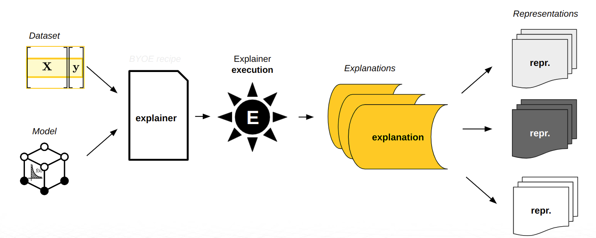

H2O Eval Studio Documentation
H2O Eval Studio provides robust interpretability of machine learning models to explain
modeling results in a human-readable format. H2O Eval Studio employs a host of different
techniques and methodologies for interpreting and explaining the results of the models.
A number of charts are generated (depending on experiment type), including Shapley,
Variable Importance, Decision Tree Surrogate, Partial Dependence,
Individual Conditional Expectation, and more. Additionally, you can get explanations
in various format like CSV, JSon or as datatable frames.
The techniques and methodologies used by H2O Eval Studio for model interpretation can be extended with recipes (Python code snippets).
This chapter describes H2O Eval Studio interpretability features for both regular and time-series experiments.
Terminology

- interpretation / evaluation
Execution of one or more explainers / evaluators to explain a model and create explanations.
- explainer / evaluator
Pluggable and configurable component which explains a specific predictive (explainer) or generative (evaluator) model using a specific method.
- explanation
Explanation is a description of model behavior created by the explainers and persisted in one or more representation.
- representation
Explainer representation is persisted explanation as JSon, CSV,
datatableframe or image.
Configuration
Predictive Models
Generative Models
Result
Talk to Report